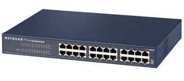
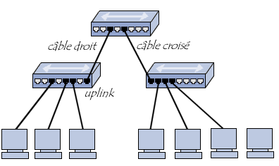

Les HUBs
Le hub, moyen de roue en anglais, aussi appelé concentrateur réseau.
Il sert à aider les petits réseaux locaux.
Les hubs USB peuvent être utilisés pour brancher plusieurs périphériques tels que stockage externe comme les clés USB et les disques miniatures, cartes mémoire, écouteurs, microphones et écouteurs, les imprimantes et les scanners. L'ordinateur «découvre» en tant que périphériques externes.
Il permet de connecter plusieurs machines entre elles.

Il y a différents types de concentrateurs :
-
Les concentrateurs actifs :
Ils sont alimentés et qui permettent de répéter le signal sur les différents ports.
-
les concentrateurs passifs :
Ils permettent de diffuser le signal aux hôte sans amplification.
Les hubs peuvent être reliés entre eux afin d'avoir un plus grand nombre de machines connectées. On parle alors de connexion en cascade. Pour ce faire il suffit de connecter les hubs à l'aide d'un câble croisé, c'est à dire un câble reliant les connecteurs de réception d'une extrémité aux connecteurs de réception de l'autre.
Les concentrateurs sont en général dotés d'un port spécial appelé "uplink" permettant d'utiliser un câble droit pour connecter deux hubs entre eux.
Il existe également des hubs capables de croiser ou de décroiser automatiquement leurs ports selon qu'il est relié à un hôte ou à un hub.
